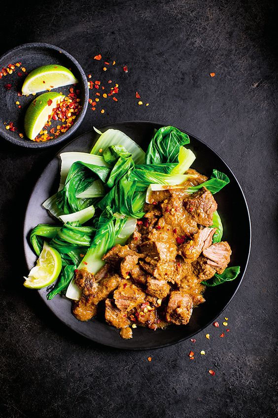

RENDANG

Bahan
- 1.5 kg daging
- 2 liter santan dari 2 butir kelapa tua
- 2 batang daun serai, memarkan
- 4 lembar daun jeruk purut
- 4 lembar daun jeruk purut
- 2 lembar daun kunyit, simpulkan
- 5 butir kemiri
- 6 siung bawang putih
- 100 g cabe merah besar
- 12 butir bawang merah
- 100 g cabe merah keriting
- 2 cm jahe, bakar
- 2 cm lengkuas
- 3 cm kunyit, bakar
- 1/2 sdm ketumbar
- 2 sdt garam
- 1/2 sdt pala
- 1 sdt jintan, sangrai
- Penyedap rasa secukupnya
Langkah Memasak
- Olah daging yang sudah disiapkan, potong-potong daging rendang dengan bentuk dadu atau seukuran yang diinginkan, hanya saja jangan pernah memotong daging terlalu kecil untuk diolah menjadi rendang agar saat dimasak nanti daging tidak hancur.
- Tuangkan santan ke wajan berukuran besar, masukkan pula serai, irisan bawang merah, asam dan daun kunyit. Aduk-aduk hingga santan mendidih dan pastikan santan yang anda masak tidak pecah, untuk itu Anda harus terus mengaduk-aduk santan hingga mendidih merata.
- Setelah santan mendidih, masukkan perlahan bumbu yang telah dihaluskan kedalamnya dan sesekali aduk-aduk selama kurang lebih 20 – 30 menit.
- Setelah anda melihat santan tampak berminyak, berarti ini saatnya kamu memasukan potongan daging rendang yang telah dibersihkan dan masak dengan menggunakan api kecil/sedang hingga santan mengental dan mengering serta bumbu meresap ke pori pori daging.
- Terus masak hingga daging empuk dan matang merata, jangan lengah untuk terus diaduk-aduk agar bagian dasar tidak gosong dan daging tidak gagal.